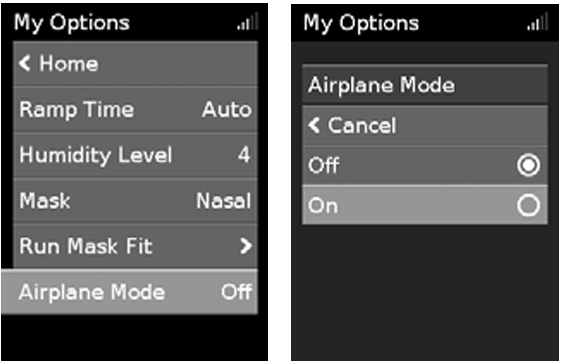

You can take your AirSense 10 device with you wherever you go. Please keep the following points in mind:
Your AirSense 10 device may be taken on board as carry-on luggage. Medical devices do not count toward your carry-on luggage limit.
You can use your AirSense 10 device on a plane as it meets UK Civil Aviation Authority (CAA) requirements. Air travel compliance letters can be downloaded and printed from www.resmed.com.
The Airplane Mode icon ✈ is displayed at the top right of the screen.

Do not use the device with water in the humidifier on a plane due to the risk of inhalation of water during turbulence.